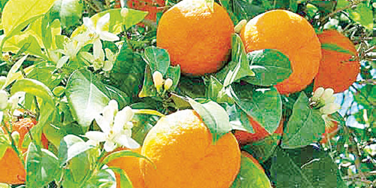

Oranges are not just an incredible source of vitamin C. In fact, when you learn about all the other areas in which they can help you, you might be very surprised.
In fact, sugared orange rinds also make a great gift. You can place the sugared orange rinds in an attractive jar and cover the top with a beautiful piece of fabric. Make a bow around the covered top with a shiny satin ribbon, and voila -- a beautiful gift for anyone who appreciates homemade food and wonderful aromas.